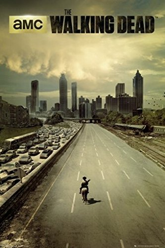
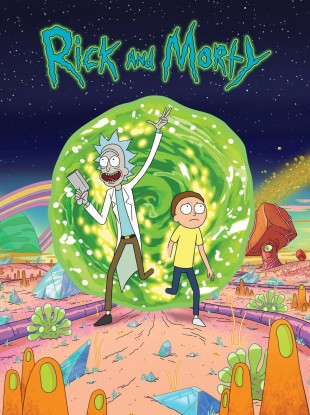
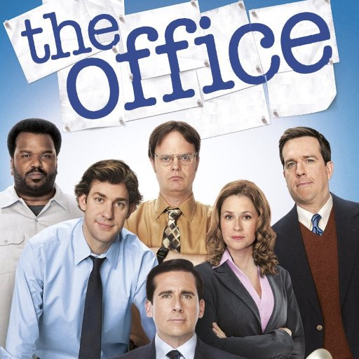
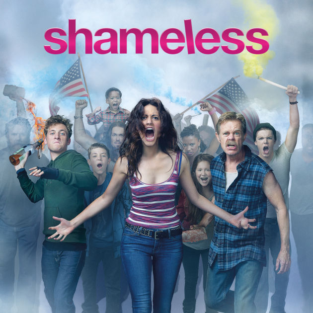
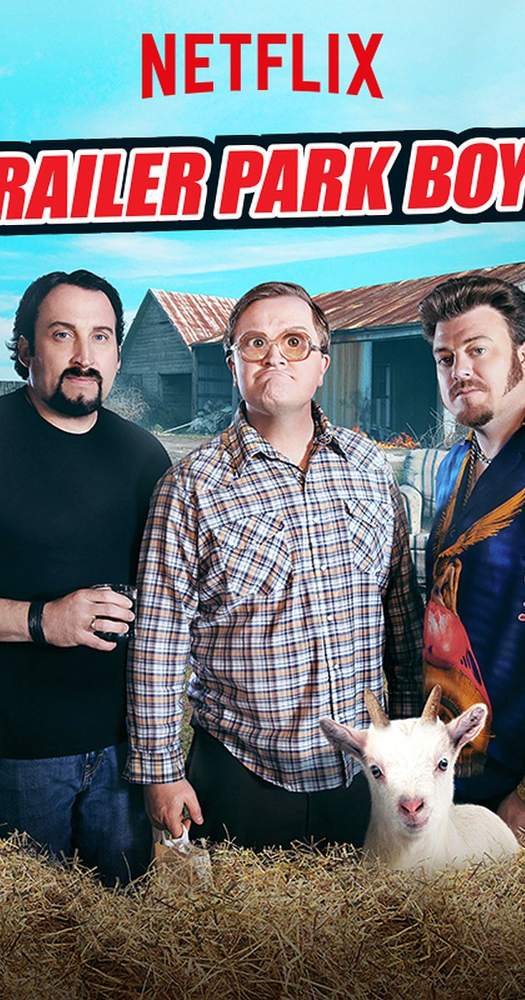
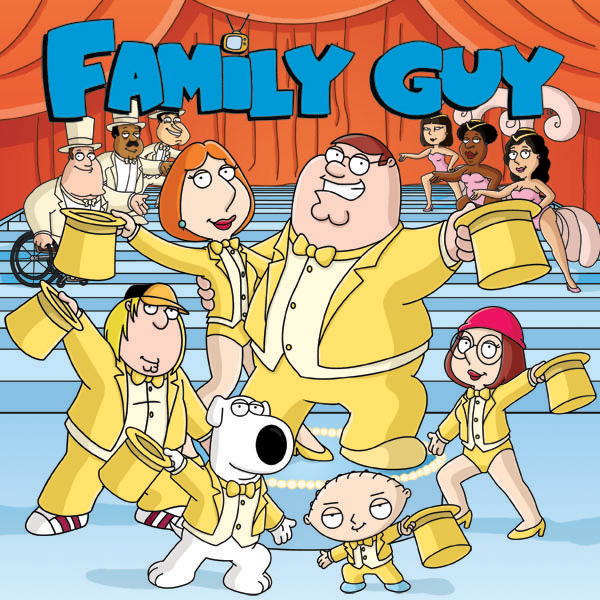

My Favorite Shows
I spend a lot of my free time watching netflix, and from that I have developed a love for some shows and watched watched them several times over. Below is a list of them (in no particular order), and their descriptions. If you haven't seen them, I highly advise checking them out!
The Walking Dead
Based on the comic book series written by Robert Kirkman, this gritty drama portrays life in the weeks and months following a zombie apocalypse. Led by police officer Rick Grimes, his family and a group of other survivors find themselves constantly on the move in search of a safe and secure home. But the pressure each day to stay alive sends many in the group to the deepest depths of human cruelty, and Rick discovers that the overwhelming fear of the survivors can be more deadly than the zombies walking among them.
Rick and Morty
After having been missing for nearly 20 years, Rick Sanchez suddenly arrives at daughter Beth's doorstep to move in with her and her family. Although Beth welcomes Rick into her home, her husband, Jerry, isn't as happy about the family reunion. Jerry is concerned about Rick, a sociopathic scientist, using the garage as his personal laboratory. In the lab, Rick works on a number f sci-fi gadgets, some of which could be considered dangerous. But that's not all Rick does that concerns Jerry. He also goes on adventures across the universe that often involve his grandchildren, Morty and Summer.
The Office
This U.S. adaptation -- set at a paper company based in Scranton, Pa. -- has a similar documentary style to that of the Ricky Gervais-led British original. It features the Dunder-Mifflin staff, which includes characters based on roles in the British show -- and, quite possibly, people with whom you work in your office. There's Jim, the likable employee who's a bit of an every man. Jim has a thing for receptionist-turned-sales-rep Pam -- because office romances are always a good idea! There's also Dwight, the co-worker who is successful but devoid of social skills and common sense.
Shameless
Oscar-nominated actor William H. Macy stars as Frank Gallagher, a single father of six who spends much of his free time drinking at bars. The Gallagher children -- led by oldest daughter Fiona (Emmy Rossum), who takes on much of the child-rearing responsibility due to her mother's absence -- manage to raise themselves in spite of Frank's lack of parenting and unusual parenting style when he does choose to act like a father. The drama is an adaptation of the BAFTA Award-winning British show of the same name.
Trailer Park Boys
Nova Scotia's trailer parks are colorful thanks to residents Ricky, Bubbles and Julian. Together, they plan mad capers, usually get-rich-quick schemes, with plenty of screw-ups along the way. They're constantly being hunted by their former trailer park supervisor, Jim Lahey, and his perpetually shirtless, pot-belled assistant, Randy. There are a host of other quirky characters that make up this zany locale of below-income characters in this Canadian mockumentary series that has spawned two feature films.
Family Guy
Sick, twisted and politically incorrect, the animated series features the adventures of the Griffin family. Endearingly ignorant Peter and his stay-at-home wife Lois reside in Quahog, R.I., and have three kids. Meg, the eldest child, is a social outcast, and teenage Chris is awkward and clueless when it comes to the opposite sex. The youngest, Stewie, is a genius baby bent on killing his mother and destroying the world. The talking dog, Brian, keeps Stewie in check while sipping martinis and sorting through his own life issues.